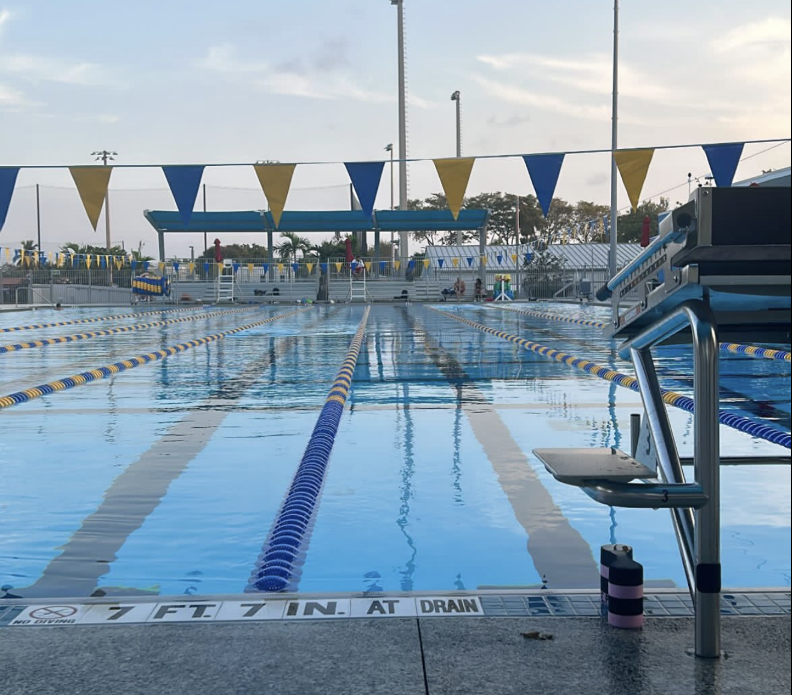

My Hobby: Swimming

Swimming is my favorite way to stay active and take a break from school. I first started swimming when I was [AGE] years old, and over time it went from something I did for fun to a regular part of my weekly schedule. These days I try to get in the pool several times a week, usually at [POOL / GYM NAME] on campus.
What I love most about swimming is how calm it makes me feel. Once I am in the water, there are no notifications, no assignments, and no distractions. It is just me, the lane lines, and my breathing. At the same time, it is a great full-body workout that builds endurance, strength, and lung capacity. A good swim always leaves me feeling refreshed and ready to focus on the rest of my day. It is also a sport I can keep doing for the rest of my life.
Swimming has also taught me a lot about setting goals. Whether it is shaving a few seconds off my 100-yard time or swimming more laps than last week, there is always something to work toward. Tracking my progress keeps me motivated, and seeing improvement over time is really rewarding. Below are my favorite strokes and a chart of how many yards I swam each day last week.
My Favorite Strokes
- Butterfly
- Breastroke
- Freestyle
- Backstroke